Rojas Travels App: Rediseño de la Experiencia Móvil de Turismo en La Guajira
Diseño integral de producto digital (UX/UI, Design System y Prototipado Móvil) para la agencia turística líder en La Guajira, Colombia. Facilitando el descubrimiento de planes culturales Wayuu, reservas en tiempo real y asistencia integral al viajero.
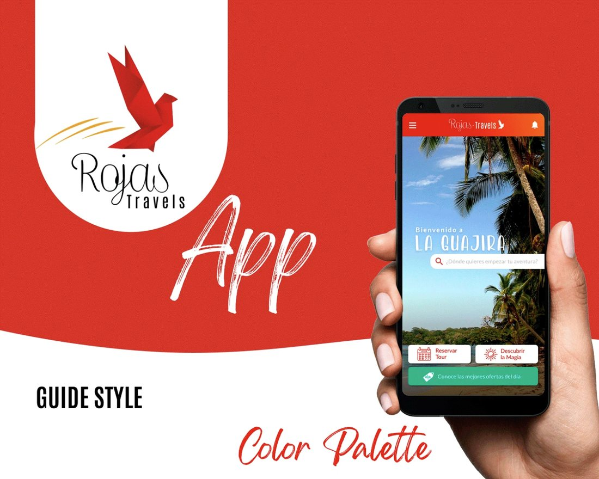
Concepto Guajira Mágica · Rediseño Mobile 2025
Branding: Vuelo de Libertad en Origami y Calidez Wayuu
El imagotipo nace de la intersección entre la artesanía geométrica Wayuu y el concepto universal de viaje: un ave mensajera en origami rojo carmesí en pleno vuelo ascendente.
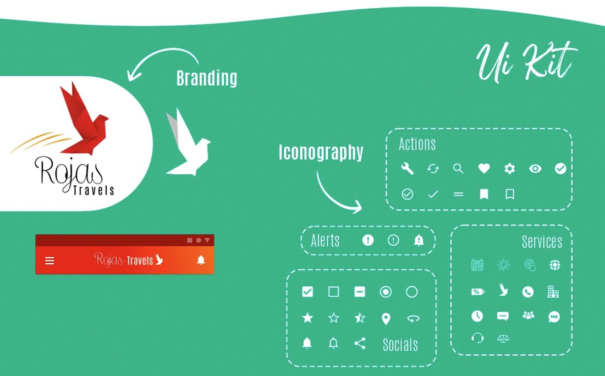
Actions Icons
Construidos sobre una retícula de 24x24 px con trazo unificado de 2px. Incluye engranajes de configuración, lupa de búsqueda dinámica, favoritos de corazón, visibilidad y marcadores de planes.
Alerts & Feedback
Puntos de contacto visual para información sanitaria, cancelaciones de vuelos o advertencias climáticas en el desierto con estados semánticos directos.
Services Hub
Glosario de 14 íconos utilitarios: calendario de salidas, sol mágico, tag de descuentos, teléfono directo, hotelería, cronómetro, soporte y asistencia jurídica local.
Precisión Tipográfica Lato y Paleta Guajira Viva
Estructura tipográfica optimizada para legibilidad en pantallas AMOLED bajo la luz solar intensa del Caribe, combinada con tonos cálidos del atardecer guajiro y la frescura turquesa del mar de Palomino.
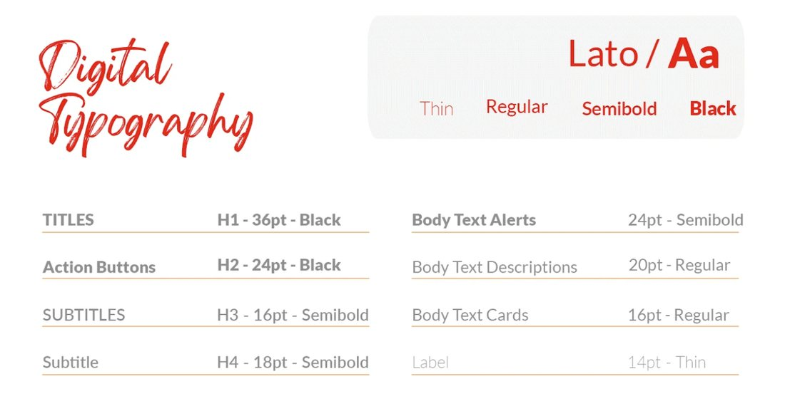
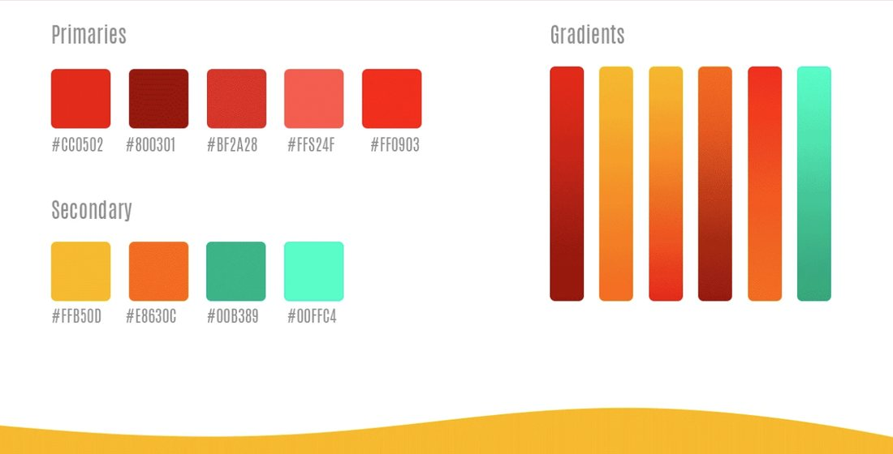
Color rector que simboliza la calidez humana de los anfitriones y el dinamismo de la marca.
Tonos tomados de las aguas de Palomino y Manaure para resaltar descuentos y promociones.
El color de las arenas de Taroa y el atardecer en el Cabo de la Vela, para estados de alerta y botones secundarios.
Bases níveas que permiten que la fotografía de los paisajes respire con máxima nitidez.
Grid Móvil de 4 Columnas y Jerarquía de Contenedores
Estructura geométrica basada en una grilla móvil de 4 columnas con márgenes laterales de 20px y gutters de 16px. La arquitectura modular permite una jerarquía de navegación predecible.
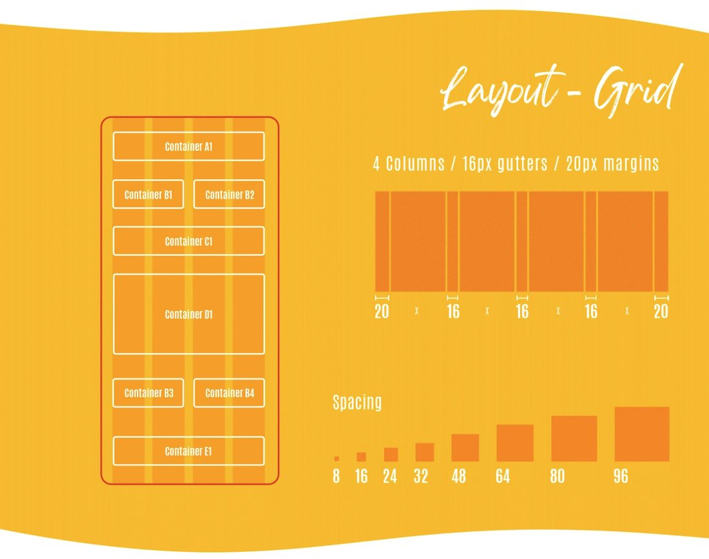
Ocupa la zona superior completa, alojando el saludo contextual, la identidad visual y el buscador de aventura interactivo.
Pestañas duales y cards secundarias con ratios adaptables para scrolls horizontales y listas continuas.
Card principal de recomendación del día y barra inferior flotante con disparadores de alta conversión.
Botones de Acción Rápida y Sistema de Cards de Tours
Diseño atómico estructurado para ofrecer alta respuesta táctil: pills multifunción con estados activo/inactivo y cards de paquetes turísticos con badges de precio y valoraciones transparentes.
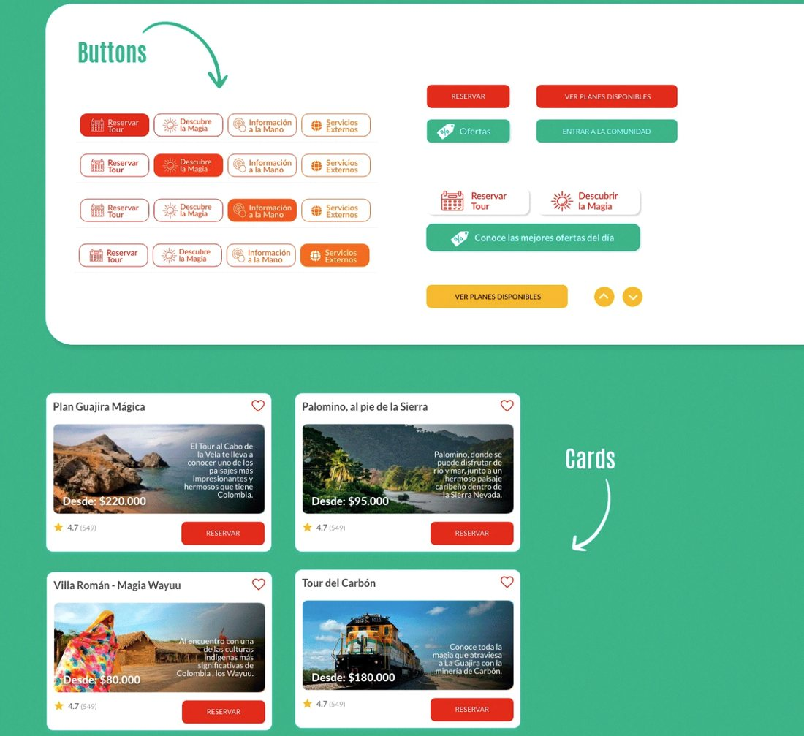
Muestra de Componentes
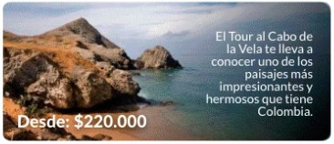
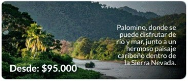
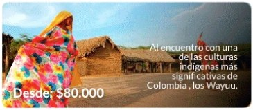
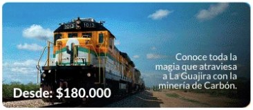
Flujo Integral de Producto Móvil
De la bienvenida a la solicitud de asistencia en terreno: las pantallas finales del prototipo móvil.
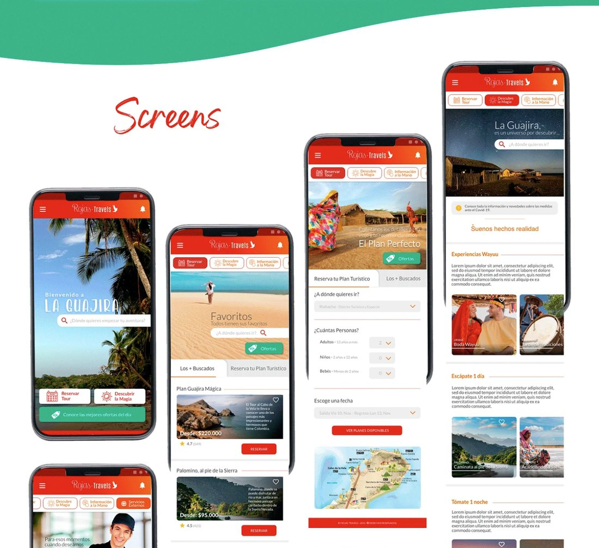
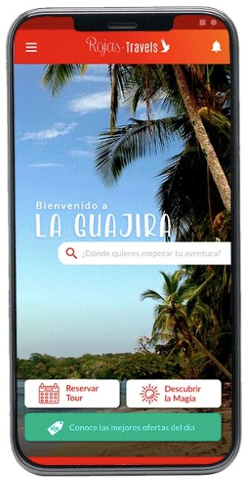
Acceso inmediato al buscador y atajo a ofertas.
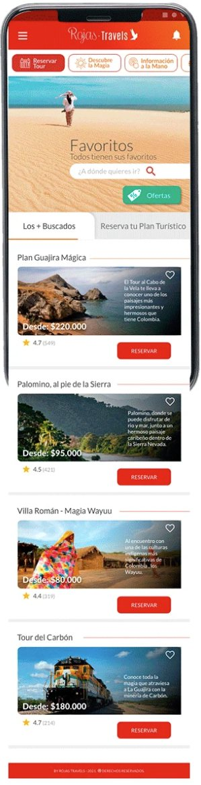
Filtros por popularidad y planes guardados.
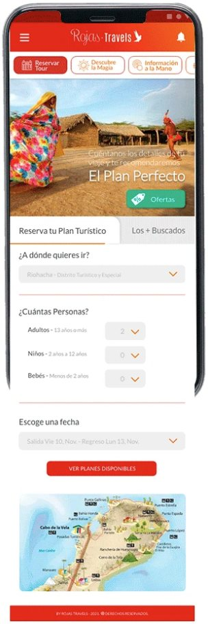
Selector de personas, mapa y cotización clara.
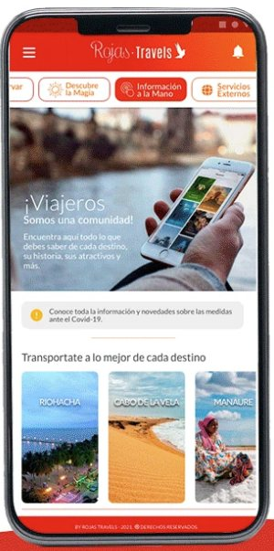
Experiencias Wayuu, recomendaciones y tips.
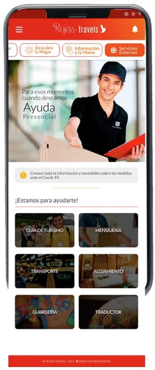
Soporte médico, traductores y auxilio logístico.
Aprendizajes Clave de Diseño en Contextos Étnicos y Rurales
Diseño Respetuoso de la Identidad Étnica
Evitar clichés folclóricos y en su lugar traducir la sofisticación geométrica de los tejidos Wayuu a sistemas de diseño contemporáneos con microinteracciones sutiles.
Optimización para Alta Luminosidad y Conectividad
Alto contraste pensado para usar la app bajo el sol del mediodía en las dunas, y contemplando zonas sin cobertura 4G.
Transparencia Radical en Precios y Logística
Eliminar la ambigüedad en costos de peajes indígenas, alimentación y requerimientos de vehículos todo terreno fue una prioridad de diseño para generar confianza antes de reservar.
¿Hablamos sobre cómo elevar tu producto digital?
Estoy disponible para roles como Lead Product Designer, Consultoría UX/UI estratégica y conferencias sobre diseño en turismo cultural.